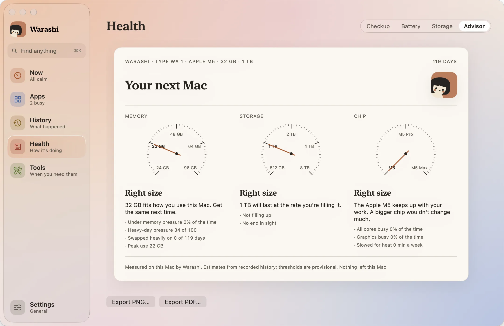
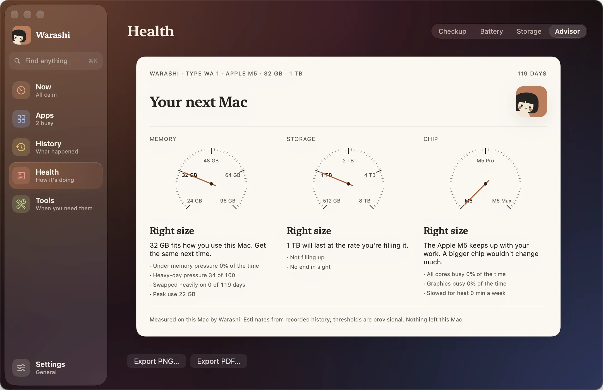

Molti cambiano Mac perché il vecchio “è lento” o il nuovo è bellissimo. Un motivo migliore: i tuoi dati mostrano che stai finendo qualcosa.
Le tre cose che contano
- Memoria: sei sotto pressione della memoria e fai swap nei giorni normali? Vedi Di quanta RAM ho bisogno?
- Spazio: a che velocità si riempie il disco? Un disco pieno al 70% che cresce di 20 GB al mese sarà pieno entro un anno.
- Chip: quanto spesso gira al massimo, per quanto tempo e se rallenta per il calore?
Quando non fare l'upgrade
Se la pressione della memoria è verde, il disco ha spazio per qualche anno al ritmo attuale e il chip raramente lavora al massimo a lungo, un nuovo Mac non ti sembrerà molto più veloce per il tuo lavoro. Libera spazio e tieniti i soldi.
Quando fare l'upgrade, e a cosa
Scegli in base al limite che raggiungi davvero: un taglio di memoria in più se vai in swap nei giorni intensi, uno spazio pensato per tre anni di crescita più un margine, e un chip Pro o Max solo se sostieni carichi pesanti o il tuo lavoro sulla GPU lo richiede.
Lascia decidere a 30 giorni
Il Consulente upgrade di Warashi registra le prove ogni giorno e, dopo 30 giorni, consiglia memoria, archiviazione e chip, arrotondati a configurazioni che Apple vende, con i numeri dietro ogni risposta.

